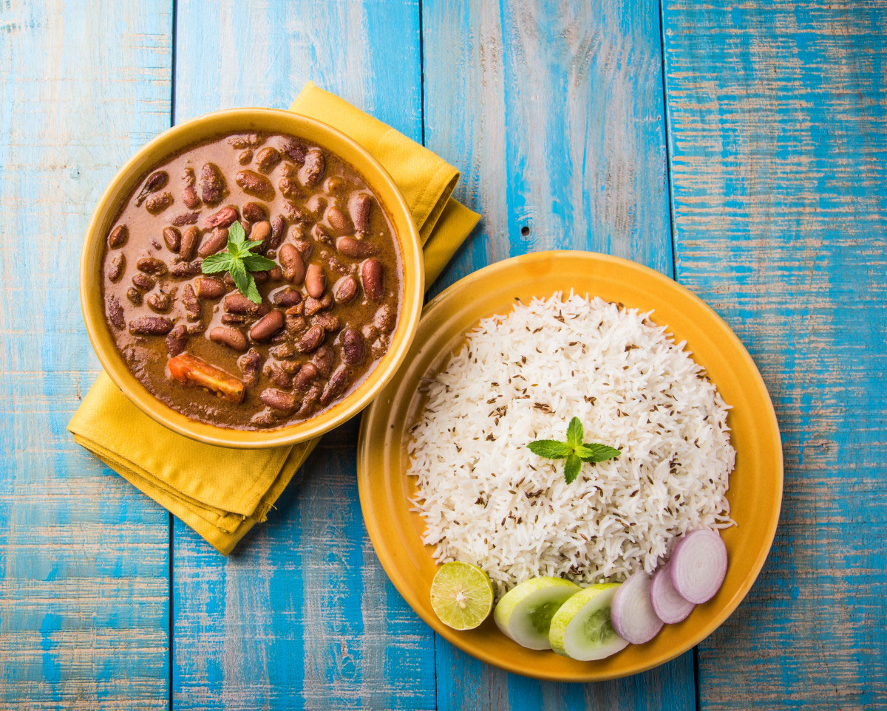

Rajma Chawal

Ingredients:
- 3 ⅔ cups Kidney beans, soaked
- 2 no. Black cardamom
- ¼ tsp Dry fenugreek seeds
- Water as required
- 2 Bay leaf
- Salt to taste
Steps:
- In a pressure cooker, add kidney beans, black cardamom, dry fenugreek seeds, water as required, bay leaf,
water as required and salt to taste.
- Cover it with the lid and cook it for 3-4 whistles.
- In a handi or kadai, add mustard oil, once it's hot, add bay leaf, cumin seeds, onions and sauté it for a minute.
- Add prepared ginger garlic paste and cook it for a minute.
- Add little water, a pinch of asafetida, degi red chili powder, turmeric powder, coriander powder and sauté it well.
- Add tomato puree, curd, salt to taste and cook it well.
- Add remaining rajma water, boiled kidney beans, salt to taste and cook for a while.
- Finish it with ghee and transfer it to a serving bowl.
- Garnish it with coriander sprig and serve hot with rice.